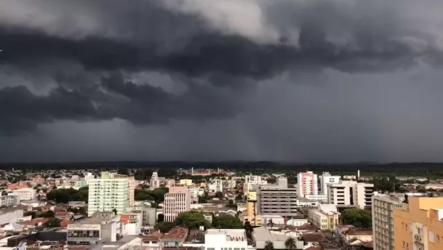

Sistema deve se formar na costa do Rio Grande do Sul na madrugada de quinta-feira (20), reforçando chuva e ventos na Região Sul. Frente fria associada ao ciclone ajuda a levar ar mais frio para Mato Grosso do Sul e São Paulo nos dias seguintes.
Segundo o Instituto Nacional de Meteorologia (Inmet), o ciclone deve se formar próximo à costa do Rio Grande do Sul e estará associado a uma frente fria que avança pela Região Sul. A passagem do sistema provoca queda de temperatura no Rio Grande do Sul, em Santa Catarina e no Paraná e também alcança o sudoeste de Mato Grosso do Sul. Na quinta-feira, as mínimas podem ficar abaixo dos 10°C no sul do Paraná, no oeste catarinense e em grande parte do interior gaúcho. O Inmet mantém aviso de tempestades para todo o Rio Grande do Sul e áreas de Santa Catarina e do Paraná. Com a formação do ciclone na quinta-feira, os ventos podem passar de 80 km/h em pontos do Sul, e os acumulados de chuva podem superar 150 mm no sul gaúcho.